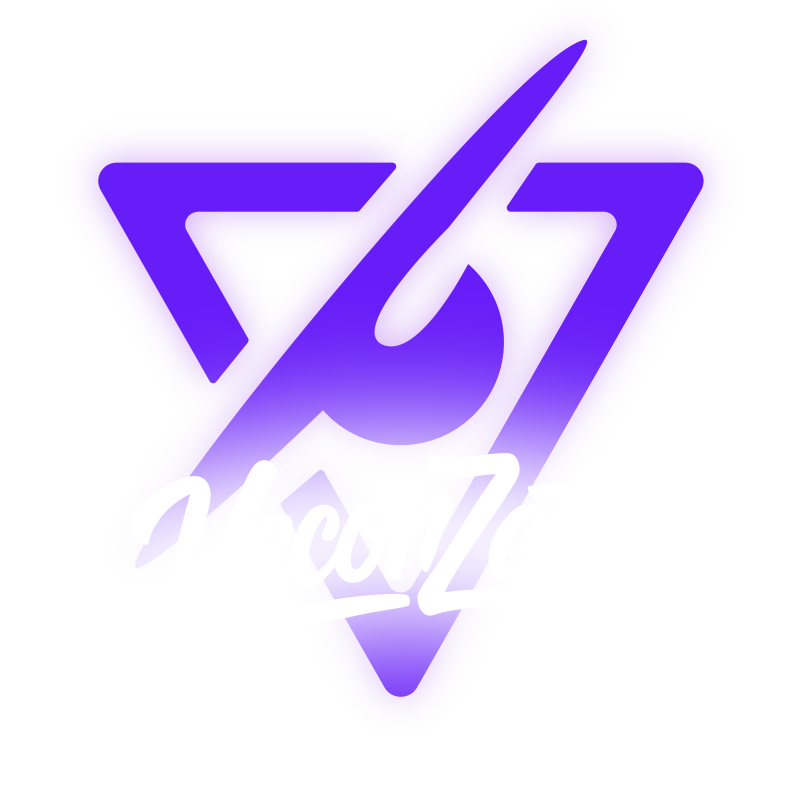

[ SOBRE MÍ ]

DANILO HERNÁNDEZ
Creador visual todoterreno.
Capturo la realidad y construyo mundos. Paso de la fotografía de retratos y eventos al retoque, el fotomontaje y la edición audiovisual.
Mi enfoque es dar vida a ideas complejas con un estilo fuertemente cinematográfico y alto nivel de detalle técnico.